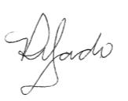

participou da palestra "UNINOVE LIVE - Ética na Inteligência Artificial - IA - Fernando Antonio Ribeiro Serra", realizada no dia 31 de Março de 2025, com carga horária de 5 horas.
São Paulo, 01 de Abril de 2025.

PROFA. VIVIANE PATRÍCIO DELGADO COORDENADORA DO PRIUNI
* Garantia de autenticidade deste documento nº 2504019203214033
* Para confirmar a autenticidade deste certificado acesse o site www.uninove.br e clique na opção "Verificação da Autenticidade de certificados emitidos pela Uninove"